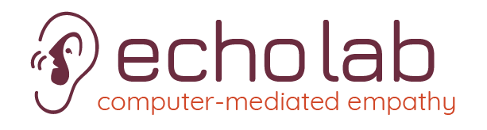

Welcome to Echolab homepage.
Welcome!
Our research goal is to create interactive systems that facilitate empathy. I am interested in the following research topics to realize the goal. Echolab is always interested in hearing from undergraduates and gradiate students with strong technical skills who are interested in creating novel interactive sysetm that can enhance our ways to empathize with other people!
To pursue Ph.D. in EchoLab, please apply to Computer Science at Virginia Tech. See the following link for more detail.
If you are in Virginia Tech already and would like to do research in Echolab, please fill out the following survey (link)
News
- 12/15/2019- Donghan Hu's thesis work got accepted as a full paepr in CHI 2020. Echolab is going to Hawaii!
- 01/15/2020- Please welcome a new member of the lab, Carlos Bautista!
- 01/30/2020- Every Thrusday evening, Echolab will hold a co-hacking time at TLOS I/O Studio (1140 Toergerson).
Core Members
- Director
-
 Sang Won Lee
Sang Won Lee
- Graduate Students (in alphabetical order)
-
Amber Aftab
-
Carlos Bautista
-
Donghan Hu
-
Viral Pasad
-
Shuyi Sun
-
Md Tahsin Tausif
Onoing Projects
Codeon
Apparition
Conversational Agents
Liveness in Writing
Thank you for reading! If you do the homework correctly, you should not see this message! (meaning you don't have to style this particular div)